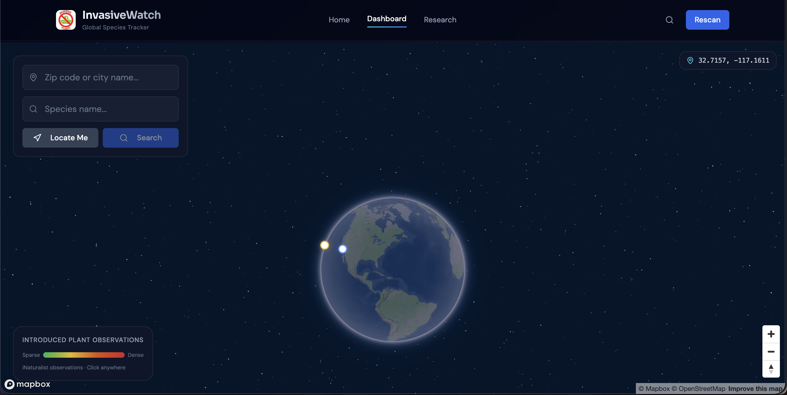
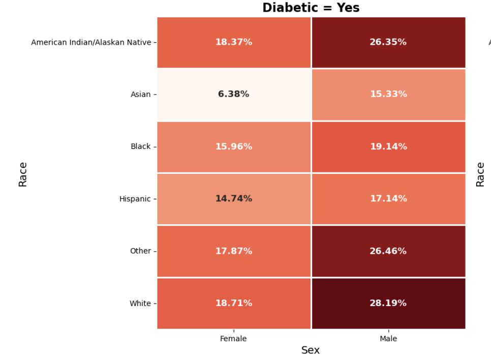
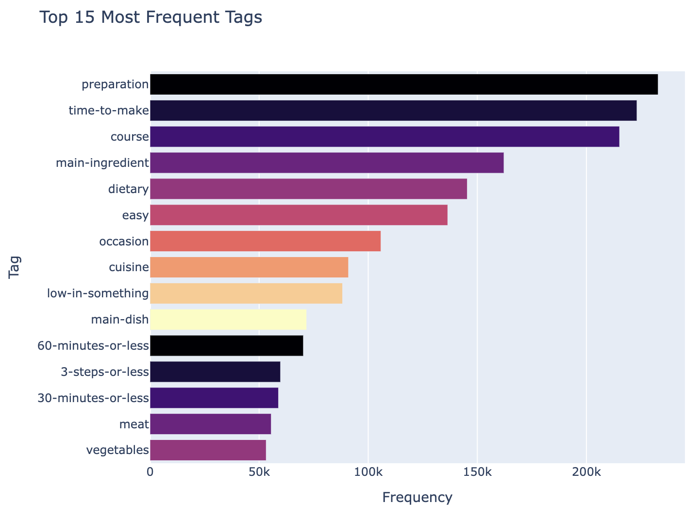

Here are all the projects that I've worked on independently and in teams over the past few years!
Invasive Species Tracker

The Invasive Species Tracker is a full-stack web app that lets users click any point on Earth and receive a real-time, ranked threat assessment of which plant species are most likely to invade that location. It combines live climate data from Open-Meteo, a cosine similarity ML model, and GBIF occurrence filtering to surface only species not yet established in the area, giving researchers and land managers an early warning tool.
Cardiovascular Risk Modeling

We analyzed a large health dataset to predict who is at risk for heart disease. We found that people with diabetes are significantly more likely to develop it, and built a model that can identify high-risk individuals before they've been diagnosed.
Modeling Recipe Ratings

I analyzed a dataset of food.com recipes to understand how a recipe's healthiness and complexity affect its ratings, finding that simpler, less healthy recipes tend to get slightly higher ratings. I then built a machine learning model to predict recipe ratings, improving its ability to handle imbalanced data and achieving a macro F1 score of 64%.